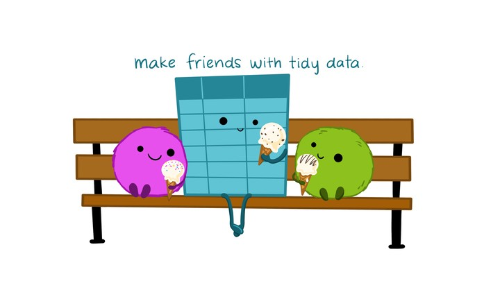
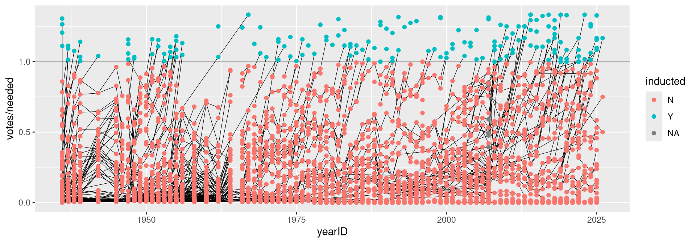
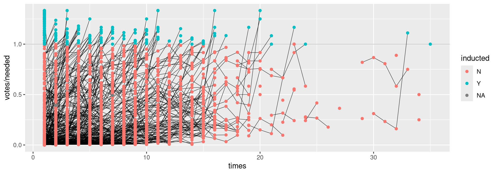
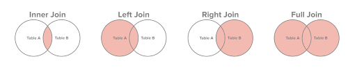
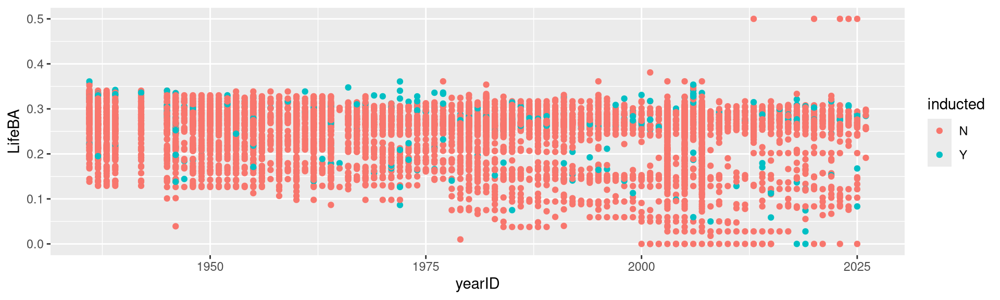
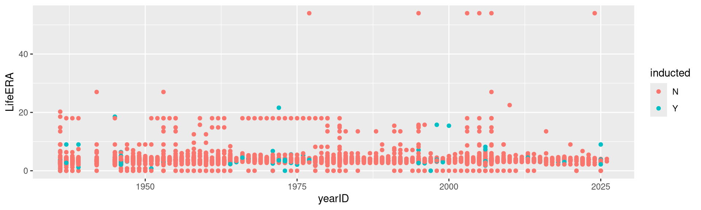

| file | class | nobs | nvar | title |
|---|---|---|---|---|
| AllstarFull | data.frame | 5454 | 8 | AllstarFull table |
| Appearances | data.frame | 110423 | 21 | Appearances table |
| AwardsManagers | data.frame | 179 | 6 | AwardsManagers table |
| AwardsPlayers | data.frame | 6531 | 6 | AwardsPlayers table |
| AwardsShareManagers | data.frame | 425 | 7 | AwardsShareManagers table |
Data Wrangling
Tidying and Joining Data with tidyr
Recall - Sources of Messiness
Column headers are values, not variable names.
e.g. treatmenta, treatmentbMultiple variables are stored in one column.
e.g. Fall 2015, Spring 2016 or “1301 8th St SE, Orange City, Iowa 51041 (42.99755, -96.04149)”, “2102 Durant, Harlan, Iowa 51537 (41.65672, -95.33780)”Multiple observational units are stored in the same table.
A single observational unit is stored in multiple tables.
Recall - Tidy data
Each variable forms one column.
Each observation forms one row.
Each type of observational unit forms a table.

Keys and Measurements
Finding your keys - Example (1)
100 patients are randomly assigned to a treatment for heart attack, measured 5 different clinical outcomes.
Finding your keys - Example (1)
100 patients are randomly assigned to a treatment for heart attack, measured 5 different clinical outcomes.
- key: patient ID
- factor variable (design): treatment
- measured variables: 5 clinical outcomes
Finding your keys - Example (2)
Randomized complete block trial with four fields, four different types of fertilizer, over four years. Recorded total corn yield, and fertilizer run off
Finding your keys - Example (2)
Randomized complete block trial with four fields, four different types of fertilizer, over four years. Recorded total corn yield, and fertilizer run off
- key: fields, types of fertilizer, year
- measurement: total corn yield, fertilizer run off
Finding your keys - Example (3)
Cluster sample of twenty students in thirty different schools. For each school, recorded distance from ice rink. For each student, asked how often they go ice skating, and whether or not their parents like ice skating
Finding your keys - Example (3)
Cluster sample of twenty students in thirty different schools. For each school, recorded distance from ice rink. For each student, asked how often they go ice skating, and whether or not their parents like ice skating
- key: student ID, school ID
- measurement: distance to rink, #times ice skating, parents’ preference
Finding your keys - Example (4)
For each person, recorded age, sex, height and target weight, and then at multiple times recorded their weight
Finding your keys - Example (4)
For each person, recorded age, sex, height and target weight, and then at multiple times recorded their weight
- key: patient ID, date
- measurement: age, sex, height, target weight, current weight
only patient ID is needed for variables in italics
Back to the list starting with Messy (3)
Messy (3): Multiple observational units are stored in the same table.
What does that mean? The key is split,
i.e. for some values all key variables are necessary, while other values only need some key variables.

Why do we need to take care of split keys?
Data redundancy introduces potential problems (same student should have the same student ID)
to check data consistency, we split data set into parts - this process is called normalizing
normalization reduces overall data size
useful way of thinking about objects under study
Tidying Messy (3)
Splitting into separate datasets:

Now for Messy (4)
Messy (4): Values for a single observational unit are stored across multiple tables.
After data are normalized by splitting, we want to de-normalize again by joining datasets.
Motivating Example: Lahman package (Sports Database)
Sean Lahman is a database journalist, who started databases of historical sports statistics, in particular, the Lahman database on baseball.
Lahman database
The Lahman database consists of 24 data frames that are linked by playerID.
This is clean, but not very readable.
The People table includes names and other attributes for each player.
Joining multiple tables helps us to bring together (pieces of) information from multiple sources.
Example: Hall of Fame of Baseball

Hall of Fame - how many attempts?
We’d like to label all the last attempts - and not just with the playerID

Joins - general idea

Joins - more specific idea
Natural Language: I want THIS with THAT using this common variable.
Data sets are joined along values of variables.
In
dplyrthere are various join functions:left_join,inner_join,full_join, …Differences between join functions are only visible if not all values in one set have values in the other

Simple example data
| id | trt | value |
|---|---|---|
| 1 | A | 5 |
| 2 | B | 3 |
| 3 | C | 7 |
| 4 | A | 1 |
| 5 | B | 2 |
| 6 | C | 3 |
Left join
all elements in the left data set are kept
non-matches are filled in by
NAright_joinworks symmetric
| id | trt | value | stress | bpm |
|---|---|---|---|---|
| 1 | A | 5 | NA | NA |
| 2 | B | 3 | NA | NA |
| 3 | C | 7 | NA | NA |
| 4 | A | 1 | 0 | 65 |
| 4 | A | 1 | 1 | 125 |
| 5 | B | 2 | 0 | 74 |
| 5 | B | 2 | 1 | 136 |
| 6 | C | 3 | NA | NA |
Inner join
- only matches from both data sets are kept
| id | trt | value | stress | bpm |
|---|---|---|---|---|
| 4 | A | 1 | 0 | 65 |
| 4 | A | 1 | 1 | 125 |
| 5 | B | 2 | 0 | 74 |
| 5 | B | 2 | 1 | 136 |
Full join
- all ids are kept, missings are filled in with
NA
| id | trt | value | stress | bpm |
|---|---|---|---|---|
| 1 | A | 5 | NA | NA |
| 2 | B | 3 | NA | NA |
| 3 | C | 7 | NA | NA |
| 4 | A | 1 | 0 | 65 |
| 4 | A | 1 | 1 | 125 |
| 5 | B | 2 | 0 | 74 |
| 5 | B | 2 | 1 | 136 |
| 6 | C | 3 | NA | NA |
| 7 | NA | NA | 0 | 48 |
| 7 | NA | NA | 1 | 110 |
Traps of joins
Sometimes we unexpectedly cannot match values: missing values, different spelling, …
Be very aware of things like a trailing or leading space
Join can be along multiple variables, e.g.
by = c("ID", "Date")Joining variable(s) can have different names, e.g.
by = c("State" = "Name")Always make sure to check dimensions of data before and after a join
Check on missing values; help with that:
anti_join
Anti join
- a neat function in
dplyr - careful, not symmetric!
Joining baseball data from the Lahman Package
Does lifetime batting average make a difference in a player being inducted?
Batting2 <- Batting %>% group_by(playerID) %>%
mutate(BatAvg = H/AB) %>%
summarise(LifeBA = mean(BatAvg, na.rm=TRUE))
hof_bats <- inner_join(HallOfFame %>% filter(category == "Player"),
Batting2, by = c("playerID"))
hof_bats %>%
ggplot(aes(x = yearID, y = LifeBA, group = playerID)) +
geom_point(aes(color = inducted))
Joining Baseball Data (2/2)
What about pitchers? Are pitchers with lower lifetime ERAs more likely to be inducted?

Your turn
- Load the
Lahmanpackage into your R session:library(Lahman) - Join (relevant pieces of) the
Peopledata set and theHallOfFamedata. - Output the names of individuals with 15 or more attempts in getting into the Hall of Fame (“times” in the data set). Make sure to deal with missing values appropriately.
Solution
Voted <- HallOfFame %>%
filter(!is.na(ballots)) %>%
group_by(playerID) %>%
arrange(yearID) %>%
mutate( attempt = order(yearID))
Voted <- left_join(Voted, People %>%
dplyr::select(playerID, nameFirst, nameLast),
by = "playerID") %>% filter(attempt > 15)
Names <- Voted %>% mutate(FullName = paste(nameFirst, nameLast))
Names$FullName %>% unique() %>%
head(3) %>% knitr::kable(format = "html")| x |
|---|
| Rabbit Maranville |
| Ray Schalk |
| Dazzy Vance |
Data Wrangling is a Super Power